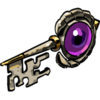
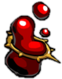
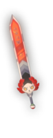
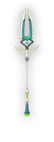
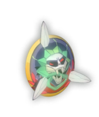
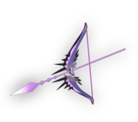
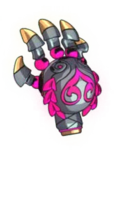
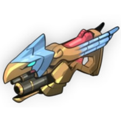

Introduction
Hades is a roguelike action dungeon crawler video game developed and published by Supergiant Games. In Hades, you play as Zagreus, the son of Hades, as you attempt to escape from the Underworld to reach Mount Olympus. Each run challenges you through a random series of rooms populated with enemies and rewards. The game has a hack and slash combat system, and you use a combination of main weapon attacks, special attacks, a dash ability, and a magic ability to defeat enemies while trying to take as little damage as you can to progress as far as possible. One of the key elements of the game is that you will die - repeatedly - and after each run you will gain treasures that will allow you to improve certain attributes or unlock new weapons and abilities to improve your chances of escaping on your next run.
Weapons
In Hades you have a range of 6 base weapons - Infernal Arms - to choose from in order to slay your enemies. To unlock the different weapons you must collect Chthonic Keys, which can be found in the different rooms of the Underworld. Each weapons also comes with three forms to choose from, each of which come with their own unique abilities. In order to unlock these different forms you have to defeat bosses during your run and obtain a special item called Titan Blood.
- Stygius
- The first weapon you start with is Stygius. Stygius, the Blade of the Underworld, was once wielded by Poseidon, but after being fragmented, it is now wielded by Zagreus in his attempt to escape the Underworld. The blade's default attack pattern is a three-swing long combo consisting of a mixture of wide and directional swings. The special creates a small burst around you after a short jump, and leaves you stationary for a short time.
- Varatha
- To unlock one of my personal favorite weapons you must use 4 Chthonic Keys. The Varatha was once wielded by Hades himself during the battle with the Titans and the Olympians. Now Varatha is used by Zagreus, ironically enough, to defeat Hades and escape from the Underworld. The blades attack pattern consists of repeated long-range stab attacks that can be charged to unleash a spin attack dealing high damage in a wide radius. The special throws the spear, which will damage enemies along its path until it stops. Activating special again recalls the spear, which will deal damage on the way back.
- Aegis
- Another one of my favorite weapons can be unlocked using 3 Chthonic Keys. The Aegis, known as the Shield of Chaos on Olympus, was wielded first by Lord Zeus in his battle with the Titans and then it was passed down to his daughter Athena. Now it Zagreus's turn to wield the mighty shield as he tries to escape from the Underworld. Aegis's main attack is a single swing that hits in an arc and knocks enemies back. Holding the attack button will block damage from the front, while charging the "Bull Rush". Releasing this will perform a shield bash forwards, dealing damage to enemies hit. The special throws the shield, which bounces between enemies and objects before returning.
- Coronacht
- One of the first weapons you will unlock only costs a single Chthonic Key - Coronacht. Also known as the Heart-Seeking Bow, Coronacht was once wielded by none other than Mistress Hera, who stood side by side with Zeus as they drove back the Titans into the Underworld. Coronacht uses ranged attacks that hit enemies at a distance. The main attack can be charged to increase distance and damage, releasing at the right moment for additional damage. The special sprays arrows in a cone in front of you.
- Malphon
- One of the more expensive weapons to unlock is Malphon which costs 8 Chthonic Keys. Also known as the Twin Fists of Malphon were forged by an ancient cyclopean forgemaster who delieved the fists to the gods, where it was by Demeter. Malphon uses fast repetitive short-range combo attacks using fists in close-quarters combat. The special is an uppercut that hits twice. This weapon is unique due to it being the only Infernal Arm with a dash-special; if the special is used while dashing it will uppercut faster but only hit once.
- Exagryph
- Another weapon that is quite expensive to unlock is Exagryph, costing you 8 Chthonic Keys. Least known among the gods who stood together to depose the Titans is the Lady Hestia, reclusive goddess of the hearth, and one-time wielder of Exagryph, the Rail of Adamant; an artifact of metal and of flame so dreadful that the gods themselves abandoned it once their fell work was done. Exagryph uses automatic or manual fire (depending on whether Attack is pressed or held) that must be reloaded once all ammo is used. The special launches a grenade to bombard the target area, which takes a short time to arrive but deals damage in an area once it lands.